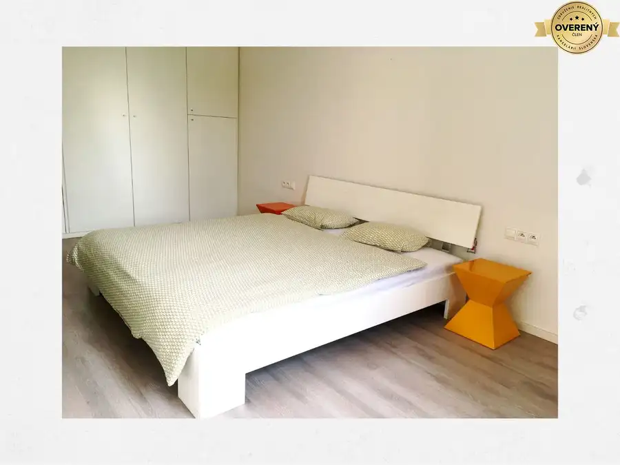
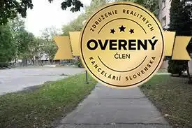
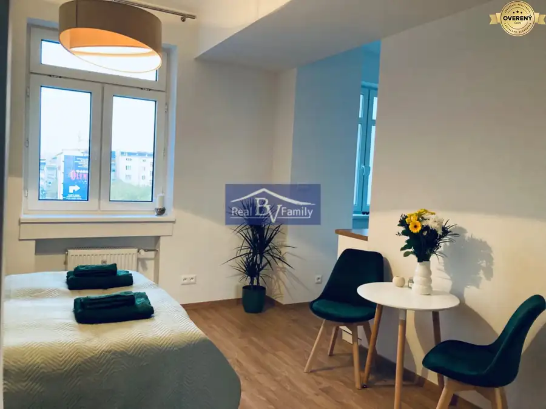

Prenájom · Byt · Predané
Prenájom, grosslingova, Staré Mesto - 4 izbový byt
Staré Mesto, Bratislava
Predané
- Dispozícia4-izbový
- Plocha160 m²
- Poschodie6.
O nehnuteľnosti
Výmera a dispozícia:
● Úžitková plocha: 160 m²
● Typ bytu: 2-podlažný mezonet
● Poschodie: 6. (výťah do 5. poschodia)
● Orientácia: južná, priestranný a presvetlený
● Bez balkóna
Vybavenie:
● Klimatizácia
● Vlastné vykurovanie a ohrev TUV
● WIFI internet
● Plne zariadený vrátane
● Kuchyňa so spotrebičmi
Lokalita:
● Priamo v centre mesta, tichá ulica
● Pešia zóna, nám. SNP, park, Dunaj v pešej dostupnosti
● Obchody a služby v okolí: LIDL, TESCO, YEME, BILLA, nákupné centrum
● Blízko MHD a cyklotrasy
Podmienky prenájmu:
● Nájomné: 1 600€ / mesiac (vrátane energií – energie 210€)
● Byt je voľný od 1. septembra
Provízia za sprostredkovanie:
● Cena: 1000€
Parametre
| Úžitková plocha | 160 m² |
|---|---|
| Poschodie | 6/vyššie poschodie |
| Počet izieb | 4 |
| Zariadenie | zariadený |
| Dátum zverejnenia | 16. 8. 2025 |
Kde to je
Ďalšie ponuky
Celá ponukaMohlo by Vás zaujímať

Byt6 1 000 €Prenájom, račianska, Nové Mesto - 2 izbový byt Nové Mesto, Bratislava 2-izbový70 m² Ponúkame na prenájom 2 izbový, priestranný a svetlý byt v bytovom dome Manhattan na Račianskej ulici. Bytový dom je 13 - ročná stavba, s 24 hodinovou…
Byt Cena dohodouKúpa, 3 izbový byt, Ovsište Petržalka, Bratislava 4-izbový78 m² Hľadáme byt pre klienta v Ovsišti na Mamateyovej ul., M.C. Sklodowskej alebo Gwerkovej ul.. Byt by mal byť aspoň po čiastočnej rekonštrukcii. Platba…
BytPredané10 PredanéPrenájom, špitálska, Staré Mesto - garsónka Staré Mesto, Bratislava 1-izbový25 m²5. podlažie Dispozícia: ● Výmera: 25 m² + pivnica ● Poschodie: 5./6 ● Parkovanie: Nie je k dispozícii Vybavenie: ● Predsieň so skriňou ● Kúpeľňa so sprchovým…